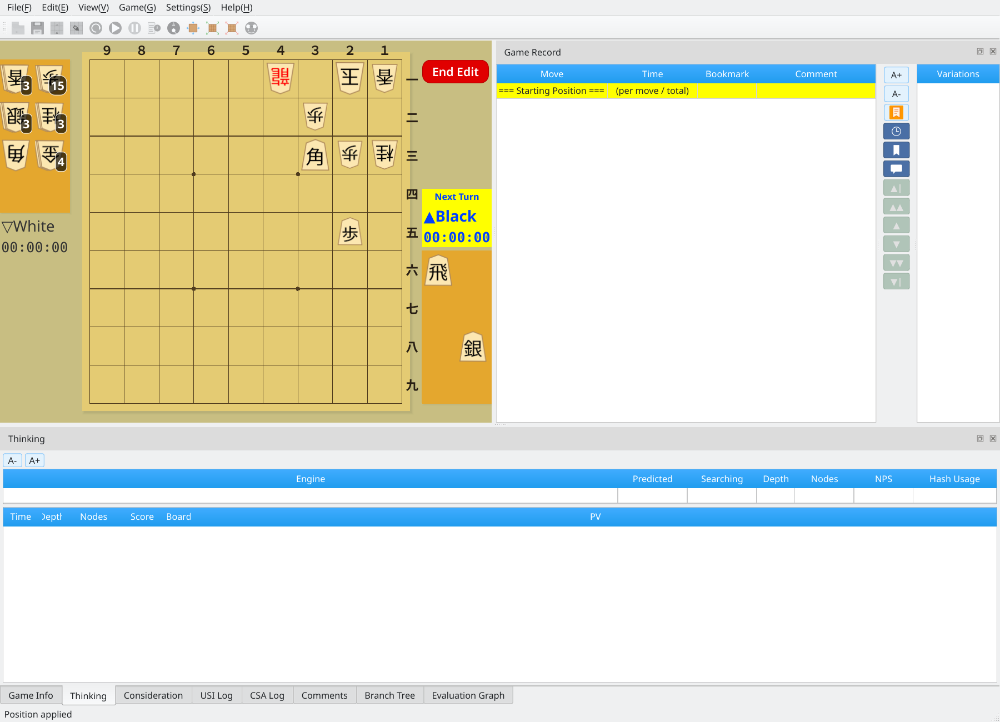
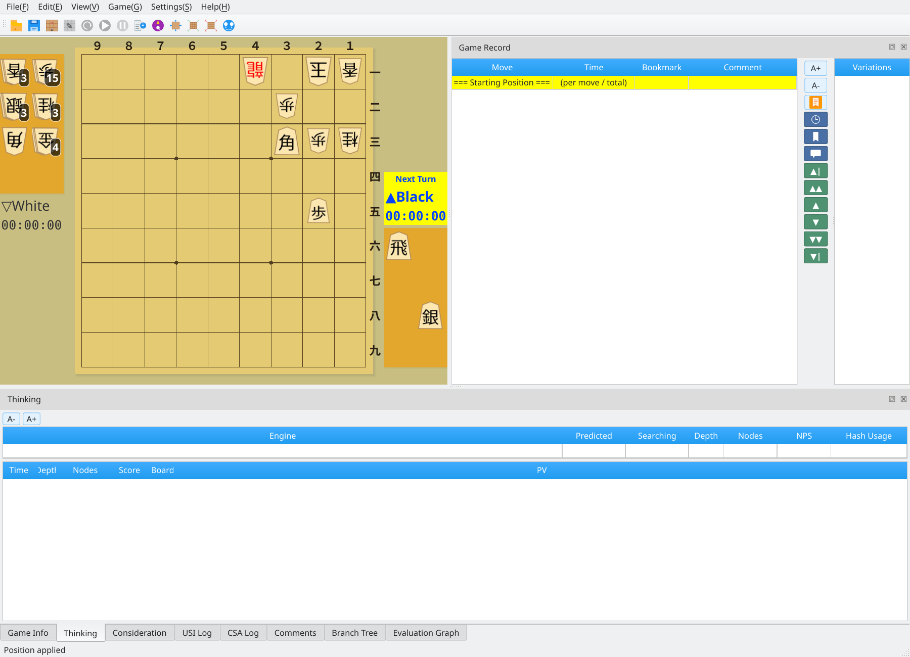

Prepare a Position
Create a tsume shogi position with the board editor
1
Main Window
Start ShogiBoardQ. Before searching for a tsume shogi solution, prepare the position you want to solve.

Main window immediately after startup
2
Create a Position in the Editor
Choose Edit → Start Position Edit to enter editing mode and create a tsume shogi position. Arrange the pieces freely to set up the position you want.

Position editing: create a tsume shogi position, then click End Edit
3
Confirm the Position
Click End Edit to confirm the position. You are now ready to search for mate.

Position confirmed: the tsume shogi position is ready